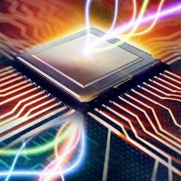

Оптические компьютеры
Опти́ческие или фото́нные вычисли́тели — гипотетические вычислительные устройства, вычисления в которых производятся c помощью фотонов, излучаемыми лазерами или светодиодами.
Предполагается, что результатом этих исследований станет новая цифровая компьютерная технология для обработки двоичных данных. Такой подход по замене элементной базы даёт возможность в краткосрочной перспективе разработать технологии для коммерческого применения, поскольку оптические компоненты могут быть использованы в классических компьютерах, сначала при создании гибридных электронно-фотонных систем, а затем и полностью фотонных.